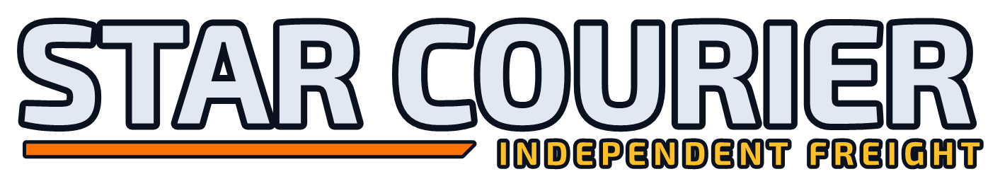
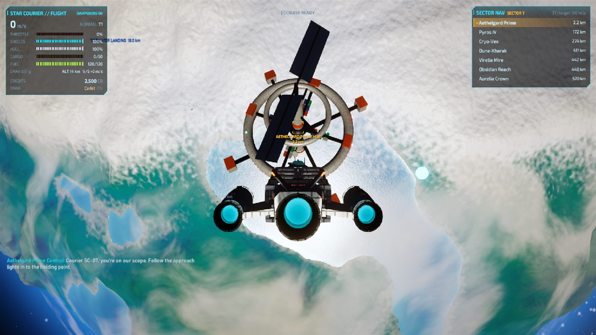
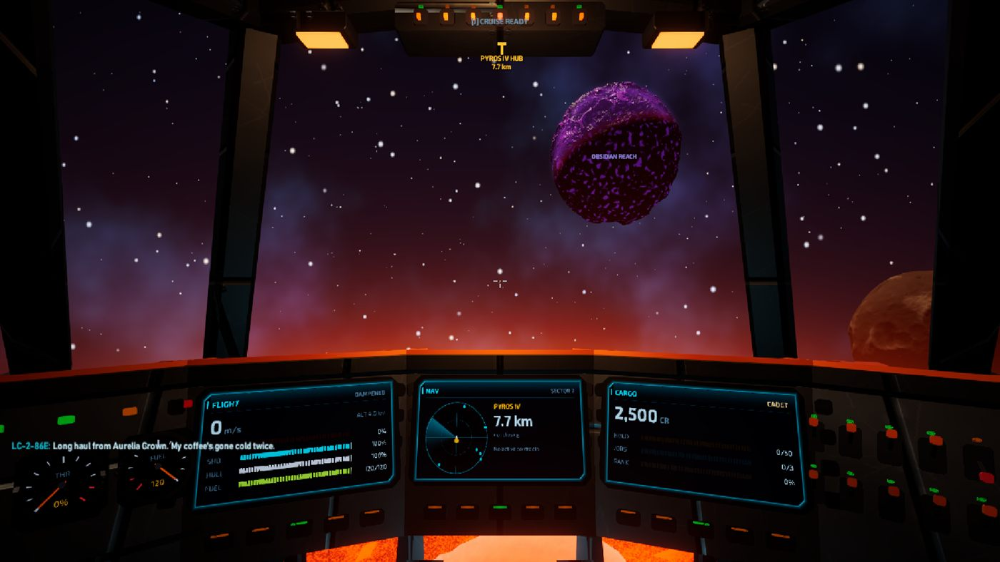
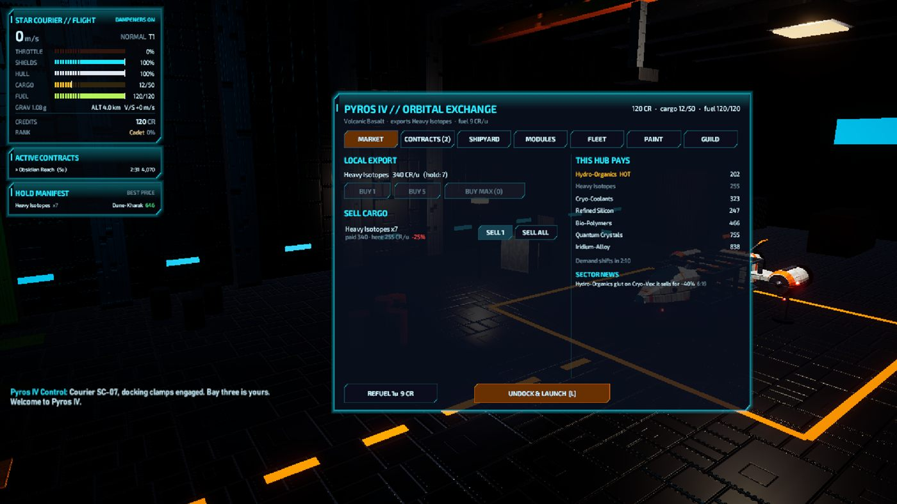
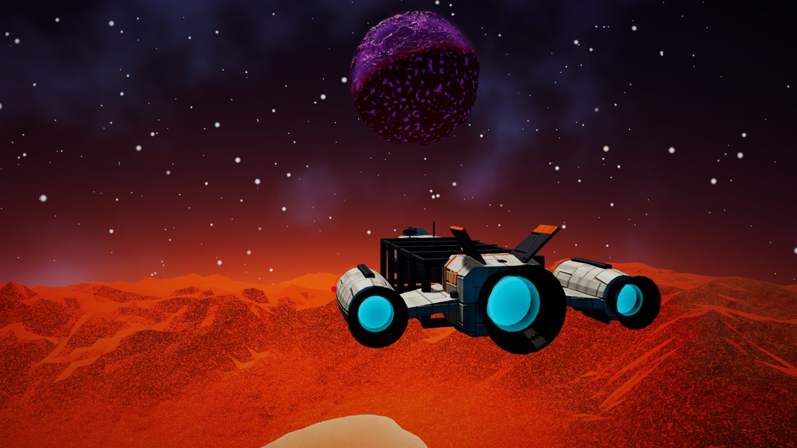

Trade, smuggle and haul freight across the stars.
Alpha · 0.9.0The job
You're an independent courier.
Take contracts from the stations you work for, load the hold, and get it there in one piece. Fly it yourself, or let the autopilot dock you when you'd rather not.
Haul
Standard, fragile, express, hazardous, charter and convoy runs. Cargo takes damage from raiders and rough flying, and the pay drops with it.
Fly
Real six-axis flight with inertia dampeners, a cruise drive and planets with gravity. Land at outposts, fly into hangars, or hand over to the autopilot and take back control any time.
Trade
Buy a world's export cheap and sell it far away. Distance and demand move prices, and a route plot shows how far your fuel will take you.
Stand
Stations remember how you work. On-time, undamaged deliveries earn standing; stations with rivals feel it when you favor the other side.
Smuggle
Run contraband past customs scans, deal with pirate interdictions, and call for a tug, a tanker or a security patrol when it goes wrong.
Listen
The music is generated live on sampled instruments, in moods that follow what you're doing: docked, flying, cruising, in danger, or near the ground.
In the game
Screens
 A lava world
A lava world
Approach lane
The cockpit
Station terminal
PyrosLatest update
What's new in 0.9.0-alpha
- Auto-dock and auto-land. Press the dock key in a station's approach lane. The autopilot steers round obstacles, and any input hands the ship back to you.
- Outposts are hangars with fuel and repair, roof doors that open as you approach, and a pad the autopilot can land you on.
- Crash warnings that tell you when you can't stop in time, and which way to steer.
- Route plot (N) and call for help (B): a tug, a tanker or a security patrol.
- Cargo damage from raiders and rough flying. The new Cargo cradles module halves it.
- Station rivalries and favor jobs.
- A rebuilt soundtrack on sampled instruments: 28 tracks, switch with , and .
- Quick controls box (F1), second key bindings, an equaliser, and export and import of your saves.